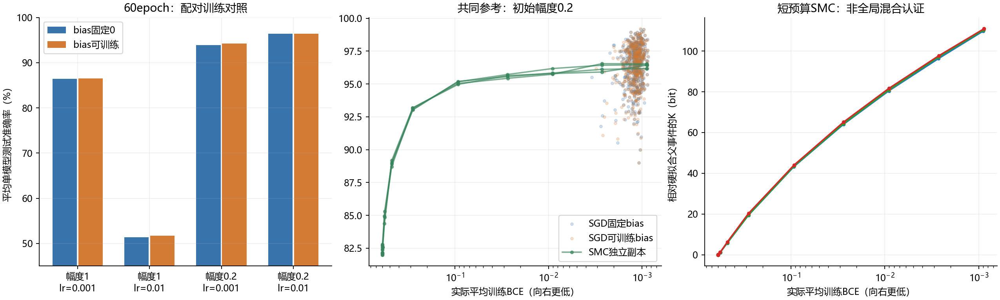

The first round is complete. Read the conclusion or the full table first. This is not a reproduction of the full paper; there is only one 16-sample training set.
Running
experiment.py implements training and SMC in one place; the configuration is at the top and there is no argparse. It requires the GPU build of PyTorch, torchvision, and NumPy; the analysis additionally requires Matplotlib. The precheck also depends on the authors' data classes in the upstream directory alongside it, so this round is runnable as a complete directory, not as a ready-made single-file migration package. The default is physical GPU1 RTX3080; see the protocol for all mathematical and sampling settings.
Run from the root of this repository:
& '.venv-gpu/Scripts/python.exe' -E -s -X utf8 research/peleg_static_recheck_20260919/experiment.py
Already-completed conditions are skipped; when the configuration or the main source code changes, the script refuses to overwrite the original results — please specify a new directory. The data reuse the local MNIST cache. Re-running across machines requires modifying the device and data paths and using a new results directory; direct reuse of the local metadata is not promised. No AutoDL migration package has been prepared at present.
endpoint_check.py uses the remainder of the original 120-second budget for at most 512 rounds of fixed-kernel updates; it does not re-estimate K and does not treat snapshots as independent replicas. analyze.py only reads results offline on CPU, using an independent NumPy float64 forward recheck.
results/ preserves data IDs, initial weights, batch permutations, per-epoch training outputs, test outputs at the prescheduled nodes, SGD checkpoints and complete endpoint weights, and SMC checkpoints plus sampled audit weights. upstream/ is the frozen authors' code, used only for cross-checking; its batch training entry point was not run.
The average accuracies shown in the G&C/SMC figures are single-model readings, not ensemble readings. High-coverage BCE matching and confirmation on an independent training set have not yet been completed.
Round-1 Conclusion: After Tightening raw BCE, Static Samples Reach SGD's Test Level
2026-09-19. Completed on the local physical GPU1 RTX3080; the remote 5090 was not used. Document No. 49 and the public paper were not rewritten.
Core Results
A fixed 16-sample MNIST 0/7 training set reconstructed from the authors' public logic, 2008 test images, and a 3/6-width LeNet are used. Weights are initialized from U[-0.2,0.2]; the bias is fixed at 0 for static sampling. Training uses the native two-class CE; the static constraint and the reporting use the equivalent stable raw BCE.
| Condition | Mean single-model/single-particle test accuracy |
|---|---|
| G&C: only requiring all training classifications to be correct | 82.1344% |
| SMC: all training correct and BCE≤0.3 | 93.1083% |
| SMC: all training correct and BCE≤0.1 | 95.0906% |
| SMC: all training correct and BCE≤0.01 | 95.8853% |
| SMC: all training correct and BCE≤0.001, first arrival | 96.3977% |
| Additional 512 rounds of fixed-kernel updates at the same endpoint | 96.3677% |
| SGD: bias fixed at 0, lr=0.01, 60 epochs | 96.3588% |
| SGD: trainable bias, otherwise identical | 96.3589% |
SGD has 512 paired initializations in each case; SMC consists of 4 independent jobs of 1024 particles each, and all jobs start from independent G&C starting points with no SGD warm-up. SMC test labels do not participate in acceptance, target-node, or budget selection. These are averages of single-network accuracies, not ensemble majority-vote scores.
After the additional updates, the individual SMC replicas range from 96.3288% to 96.4150%. There are still 1024 distinct complete test prediction vectors per replica; agreement in average performance must not be misread as the complete function distribution having become a single point, and the presence of diversity likewise does not prove sufficient mixing.
Conclusions that can be supported: in this experiment, G&C filtered only by training classification correctness is clearly below SGD; continuing to tighten raw BCE under the same zero-bias reference measure, the static conditional samples also reach the same test level. Therefore, the original hard-fit control is insufficient to rule out loss-resolved static selection as an explanation of the generalization gap.
This cannot be upgraded to: having overturned all of Peleg's experiments; SGD being equal to static sampling; the complete function probability distributions already being identical; or this holding for all architectures and training sets.
Actual Adjudication of the Two Code Suspicions
Bias Is Not the Main Explanation
The original public code fixes the bias prior at 0, while SGD allows training the bias — this is indeed worth controlling. But in the critical a=0.2, lr=0.01 group, the accuracy of trainable bias minus fixed bias is only about 0.00010 percentage points, with a paired-initialization bootstrap 95% interval of [-0.01352,0.01362] percentage points. Both groups achieve 512/512 all-correct training fits.
This rules out the simple explanation that "the main gap is most likely caused solely by whether the bias is trained"; this attribution can no longer be retained on the basis of the code difference alone.
Learning Rate and Initialization Do Interact
At a=1, lr=0.001 the accuracy is about 86.4% to 86.5%, with the training BCE already extremely low and plateauing early; at a=0.2, lr=0.001 the average is about 93.9% to 94.2%, but some models still have not fully fit; at a=0.2, lr=0.01 all models fully fit and reach about 96.36%.
In the two a=1, lr=0.01 groups, no model fully fits; 83/512 and 95/512 runs in the fixed-bias and trainable-bias groups, respectively, produce non-finite outputs. These are numerical/optimization failure conditions and are not treated as static or generalization counterexamples.
The advantage of small initialization does not disappear because the learning rate is fixed. raw BCE values under different initialization priors cannot be directly compared across settings without reference to the output scale; in particular, an extremely low BCE under large initialization cannot be used to refute the conditional curves of the small-initialization reference measure.
Which Step Is Still Missing for BCE Matching
At the SGD endpoints with fixed a=0.2, lr=0.01, bias=0, an exploratory matching was performed without selecting bins by accuracy. The binning includes all SMC source thresholds, preventing errors caused by directly mixing different conditional distributions.
- log10 bin width 0.1: common support 80/512, i.e., 15.625%. SGD is 96.3521%, SMC after matching is 96.3797%, difference SGD-SMC=-0.02765 percentage points, interval [-0.44399,0.37259].
- Half bin width 0.05: common support 68/512, i.e., 13.281%. SGD is 96.3711%, SMC is 96.3728%.
This is a result from finite binning on the common-support subset, not a strict matched-BCE confirmation over the full SGD population. Between the endpoint nodes 0.003 and 0.001 there is not sufficiently dense intermediate sampling, leaving coverage insufficient. If stronger conclusions are needed in the future, dense nodes should be frozen based on the training BCE distribution and confirmed independently, rather than continuing to select high-test-accuracy points.
The static means before and after the additional endpoint updates are both about 0.000889; the median SGD endpoint BCE is about 0.00116. The two belong to neighboring low-loss regions, but they cannot be called exactly the same loss merely because they are close.
Quality, Time, and Files
- The authors' data selection and normalization agree exactly with the independent reconstruction; the forward pass, gradients, 10-step SGD, and the plain single-model float64 implementation agree to about the 1e-16 level.
- The hashes of the original sampling source code and the authors' files are unchanged. The continued SMC fixed-kernel updates are saved separately and do not overwrite the first round.
- The NumPy float64 recheck covered 72 groups of sampled audit weights, each group nominally containing 16 models and 80 inputs; 4 failed models with non-finite outputs were skipped and recorded. All actual checks showed no classification flips; no observed violations of the SMC training constraint. The maximum absolute logit difference between the valid main conditions and SMC is about 6.08e-6. The failed large-initialization groups separately contain huge values, which were not mixed in as normal error metrics.
- At the deep endpoints, only 5 to 9 initial ancestors remain; high acceptance rates, multiple replicas, and stable continued updates are still not proof of global mixing.
- The 8 conditions comprise 4096 networks in total; the training loops total 20.25 seconds and training-side evaluation 35.28 seconds; the four G&C collections take 29.30 seconds, the initial SMC advancement 206.92 seconds, and the endpoint fixed-kernel updates 81.69 seconds. The main run, including the corresponding disk writes, takes about 6.5 minutes, excluding code writing, prechecks, and offline audits. No training or sampling processes of this experiment are still running.
The first round ends here; no new training sets, width scans, magnitude regularization, or deeper sampling were automatically appended.
- Full analysis report
- Machine-readable summary
- Preregistered protocol
- Main script, no argparse
- Endpoint check
- Independent analysis
